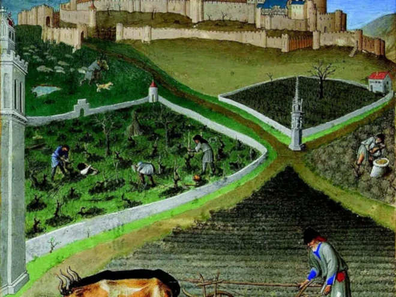
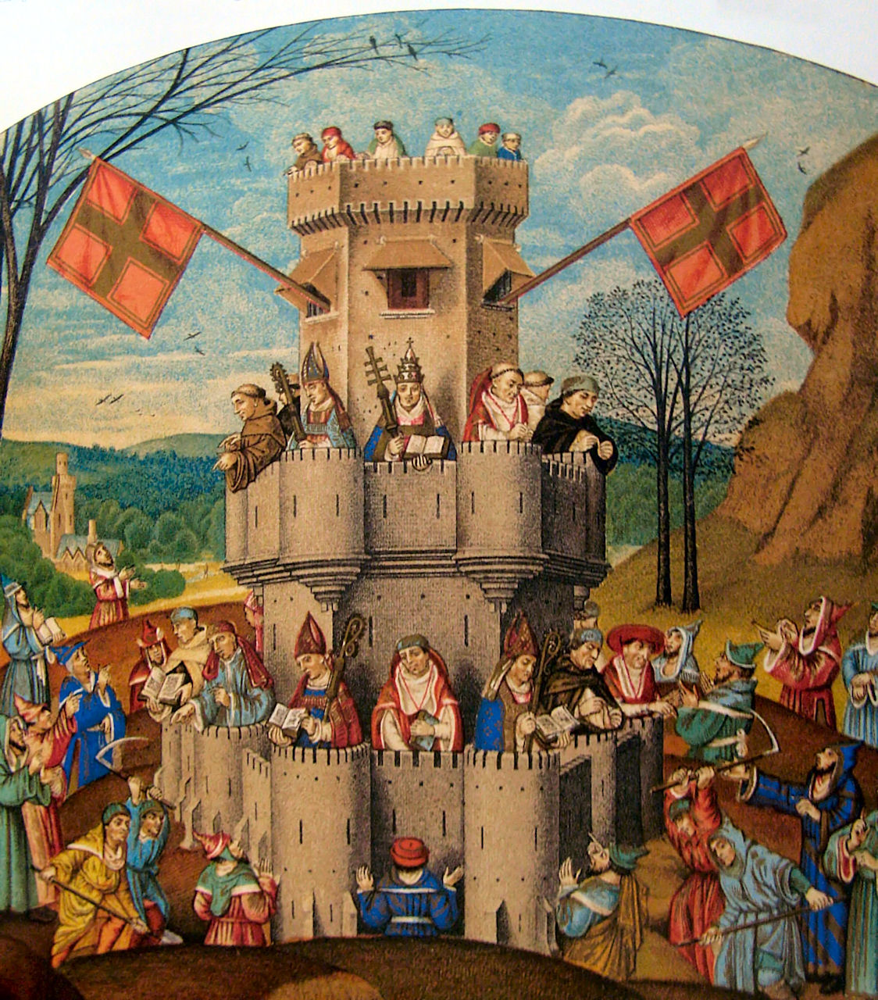

Informações relacionadas a história focando principalmente na época da idade média.
Feudalismo
Feudalismo foi o modo de organização social, política e econômica baseado no regime de servidão durante a Idade Média, predominante na Europa Ocidental entre os séculos V e XV.// Era o sistema que imperava dentro do feudo, uma grande propriedade rural, que abrigava um castelo fortificado, aldeias, terras para cultivo, pastos e bosques. Com a queda do Império Romano, os proprietários de terra acabaram por se refugiar em suas propriedades para fugir das invasões bárbaras, e acolheram pessoas que trabalhavam para eles em troca de proteção. Esses trabalhadores e os donos de terra desenvolveram uma relação de servidão, construindo as figuras dos servos e dos senhores feudais.

Política
Toda a política estava centralizada nas mãos dos senhores feudais. Os reis lhe concediam privilégios e eram eles quem tinham a última palavra dentro de seus respectivos feudos. Portanto, todas as decisões políticas, e também de justiça, eram tomadas conforme as vontades e opiniões do senhor feudal.

Crise do feudalismo
De forma gradual, o sistema feudal começou a entrar em declínio, a partir do século X, quando reiniciou o crescimento das cidades e das relações comerciais. Nos anos anteriores, a população europeia cresceu de forma acentuada, dificultando a vida nos feudos. Dessa forma, as cidades tiveram que voltar a ser habitadas e o comércio passou a ser a principal atividade exercida nesses locais. Houve a criação de trabalhos assalariados, fazendo emergir uma nova classe: a burguesia. Era o começo do desenvolvimento de um novo regime econômico e social, o capitalismo.